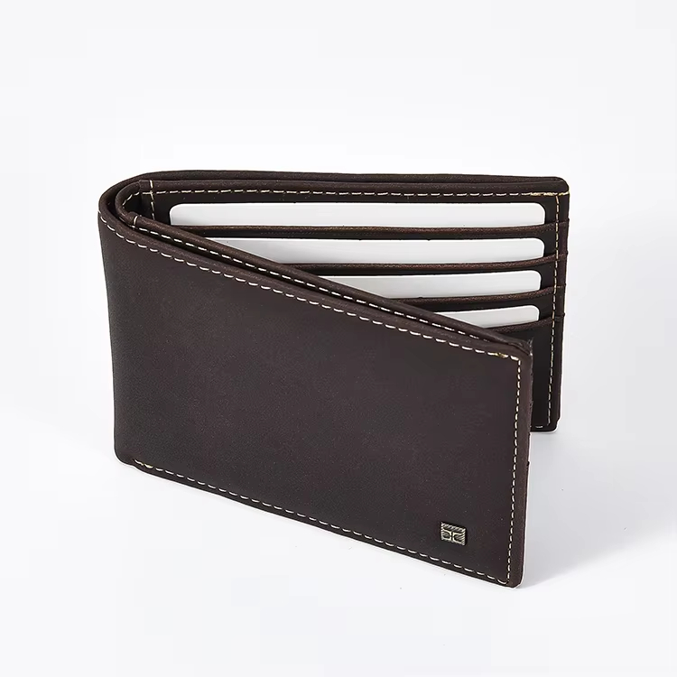
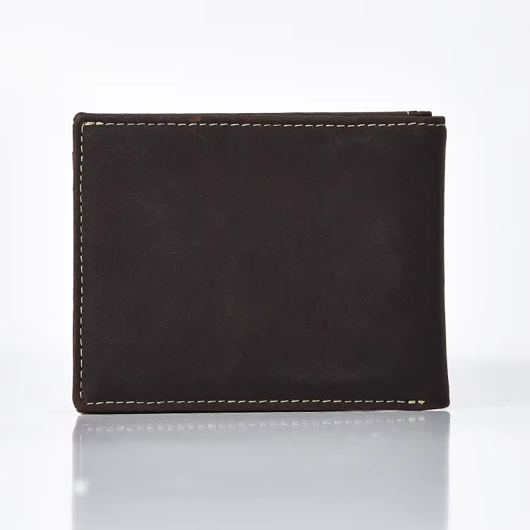
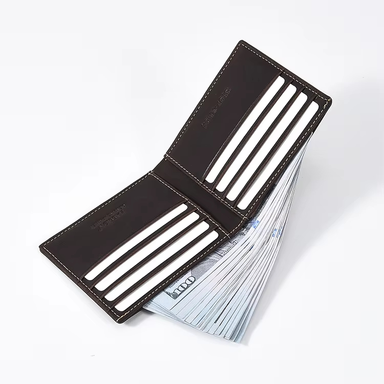
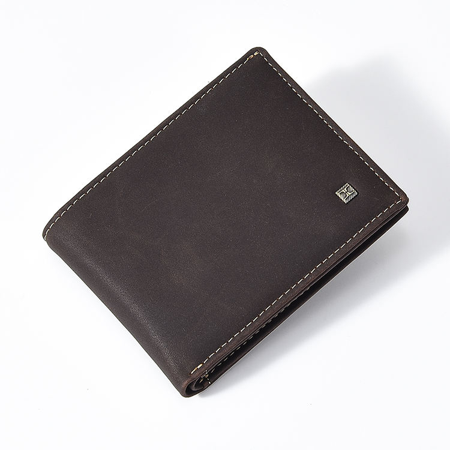

Classic Men's
Bifold Wallet
A classic men's bifold wallet reference for private-label sampling, card-slot structure review and logo customization.
This page is prepared for OEM and private-label development, with details intended for sampling discussion and customization review.

Reference Details for Buyer Review
These references help start a sampling discussion. Final specifications can be adjusted depending on material, slot layout, logo method and order details.
Reference Views for Sampling Review
Use these views to review bifold structure, card slot layout, edge finishing, leather surface and possible logo placement before sample development.



Additional interior, logo-position and packaging photos can be prepared during sample discussion.
Bifold Wallet Details Buyers Usually Confirm
The structure can be refined around the buyer's brief, target market and sample feedback.
Customization Options for Private-Label Orders
HASSION supports men's wallet development from first reference through sample confirmation and production planning.
What to Send Us for a Faster Quote
A clear brief helps the team review feasibility, sampling details and production planning more quickly.
- Reference photo or physical sample
- Target wallet size and structure
- Card slot and cash compartment requirements
- Logo file or branding requirement
- Leather / color direction
- Estimated order quantity
- Packaging requirement
- Target market or retail price range, if available
Start a Men's Bifold Wallet OEM Project
Share your reference, logo file, target quantity and structure requirement. Our team can help review sampling details, material options and production feasibility.